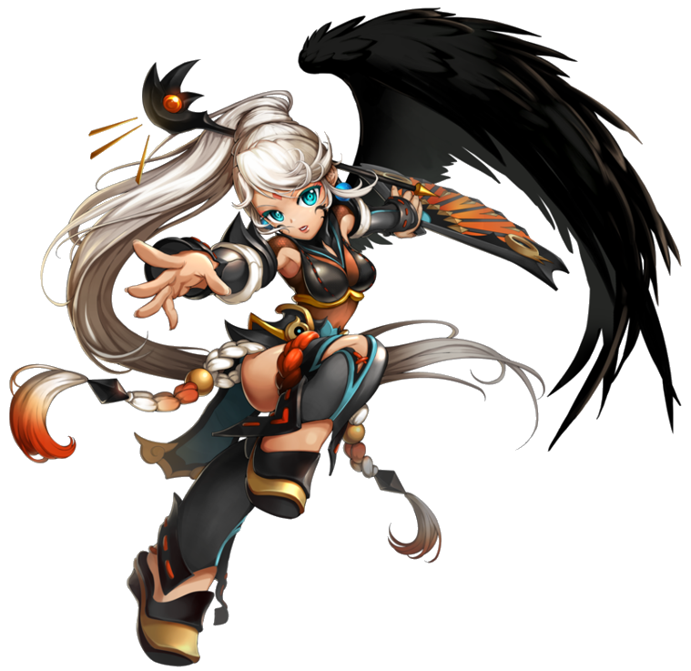
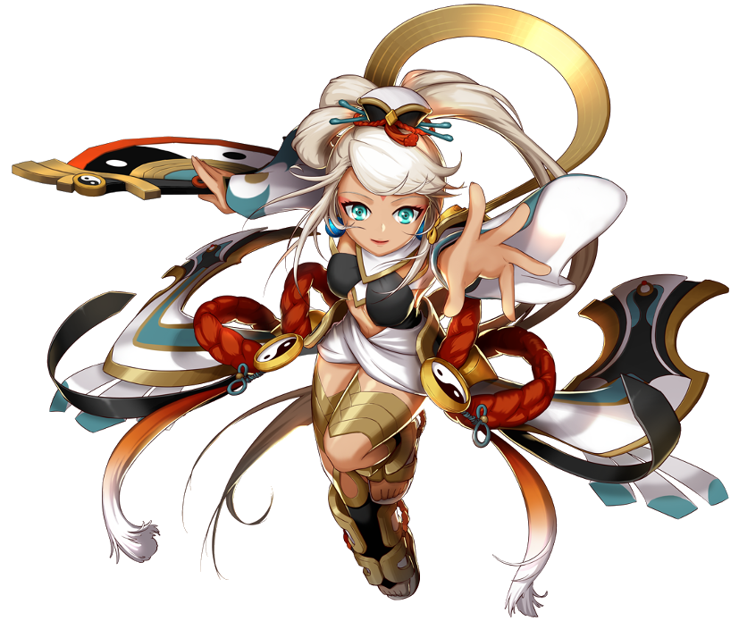

Informações Principais do Personagem
Nome: Lin
Idade: 17 anos
Origem: Vila de Gaon
Conta a história que há muito tempo, quando as criadoras ainda habitavam Ernas, existiram
quatro deusas: Ernasis, a deusa da guerra e da coragem; Lisnar, a deusa da afeição e dos
espíritos; Armenias, a deusa da sabedoria e da harmonia; e finalmente, Agnecia, a deusa da vida
e da pureza. Enquanto as três deusas (Ernasis,Lisnar e Armenias) governavam Arquimídia, outros
deuses foram enviados para outras regiões de Aernas, e Agnecia era responsável pela terra
oriental. Agnecia, contudo, acabou sendo esquecida pelos mortais, pois abdicou da sua posição
como divindade.
Isso aconteceu porque a deusa, em uma viagem para o leste, ela teve uma batalha em uma vila com
uma terrível criatura mágica, antiga e feita de pura maldade. Longe dos olhos das demais deusas,
a criatura crescia e seu mal ameaçava destruir tudo o que era bom em Ernas, caso conseguisse se
espalhar. Assim, Agnecia usou todos os seus poderes para selar a criatura dentro do seu próprio
corpo e salvar o mundo. Mas para isso usou uma magia proibida, que drenou quase todos os seus
poderes divinos, levando-a a beira da morte. Assim que Agnecia morresse, o mal em seu corpo
seria libertado e Ernas estaria uma vez mais condenado.
Nos seus últimos suspiros e gastando a última centelha do seu poder divino, Agnecia conjurou uma
magia de ressurreição eterna. Os moradores do vilarejo que foram libertados por uma criatura má
e antiga prometeu cuidar bem dela honrando seu desejo se ela renasceria.
Através das eras, ela estaria fadada a continuar renascendo para manter o selo intacto. O grande
Mal sempre conseguiria retornar quando as trevas cobrissem Ernas, mas seria novamente
aprisionado pelo selo, reativado então em uma nova garota. Ela seria a própria reencarnação da
antiga deusa! Tudo ficaria bem, exceto se a garota morresse enquanto Ernas estivesse coberta
pela escuridão. Isso libertaria as trevas e traria o fim do mundo!
Depois de muito tempo, uma menina nasceu no vilarejo, e ela cresceu com amor e atenção dos
moradores da vila, a nova garota que carregava o selo era Lin, uma jovem brilhante, corajosa e
doce.
No entanto, no ano de 15 anos de idade dela, o enorme desastre foi trazido por uma tribo
demoníaca sobre o vilarejo, e ela escapou com a ajuda dos moradores. Então, sendo a única
sobrevivente de seu vilarejo, ela parte sozinha para uma viagem longa a Kounat onde acreditou lá
é a existência para ajudá-la a lutar contra o desastre para impedir que o Mal fosse libertado, e
foi isso que a colocou no caminho da Grand Chase!

Classes
Sacerdotisa
Arma: Leque
Despertada
Arma: Leque
Caótica
Arma: Leque

Escolhida
Arma: Leque
Habilidade especial
Selos de Poder
Lin é a primeira personagem a utilizar os Selos do Poder. Em baixo da sua barra de MP têm cinco
selos. Eles se recarregam lentamente ou rapidamente se a Lin ficar parada por alguns segundos.
Um selo é usado quando a tecla X é pressionada durante a corrida, o pulo, ou executando um
combo. Isso inflige um pequeno dano extra no oponente e causa uma pequena baixa na defesa.
Ao mesmo tempo, os Selos de Poder dão à Lin uma nova habilidade para melhorar as suas
habilidades de MP. Quando uma habilidade de MP for executada, duas teclas aparecerão sobre a Lin
que mostrarão setas direcionais. Se o jogador pressionar as setas do teclado antes da habilidade
for executada, Lin receberá uma grande melhora na habilidade.
Nota: Apesar das suas habilidades utilizarem selos do poder, nenhum efeito é causado no
oponente.